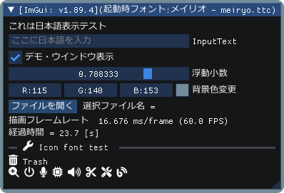

ImGuin
Dear Imgui wrapper using CImGui and Futhark with Nim language.
Under construction at this moment
Usage: Sample program and run
Prerequisite
-
Nim-1.6.10 or later
-
Add libraries
nimble install glfw nimgl
-
For Linux Debian 11 Bullseye
$ sudo apt install xorg-dev libopengl-dev ibgl1-mesa-glx libgl1-mesa-dev
and for glfw3
$ sudo apt install libglfw3 libglfw3-dev
Build
-
First clone this project,
git clone --recursive https://github.com/dinau/imguin
-
Sample program is here, examples.
For instance, imguin_glfw_opengl3.nim:cd imguin/examples/glfw_opengl3 makeAfter build, run
./imguin_glfw_opengl3(.exe). -
For static link, read this examples/README.md.
Screen shot
These are screen shots on Windows10.

glfw_opengl3_nimgl_imguin_jp.

Update latest Dear ImGui and CImGui
Prerequisite
-
Git installed.
-
Windows10 or later
Clang/LLVM refer to Futhark installation.nimble install futhark
-
Linux Debian 11 Bullseye
sudo apt install libclang-dev nimble install --passL:"-L/usr/lib/llvm-11/lib" futhark
Important Notice: Confirm Futhark version is v0.9.1 or later.
nimble dump futharkUpdate ImGui/CImGui
-
Update to latest definition files uisng Futhark,
pwd imguin cd src/updater make
ImGui/CImGui version is v1.89.3 at this time. (2023/03)
-
Update/Downgrade to the version that specified tag of CImGui for example,
pwd imguin cd src/updater make CIMGUI_TAG=1.86
Examples notice
-
examples/sdl2_opengl3
-
If you are on Windows OS 32bit, you should get
SDL2.dllfor instance from release-2.26.4.- Unzip SDL2-2.26.4-win32-x86.zip
- Copy SDL2.dll to examples/sdl2_opengl3 folder.
-
On Windows OS, it needs dev tool to compile SDL2 app.
SDL2-devel-2.26.4-mingw.zip
for instance "SDL.h","-lSDL2.dll"(libSDL2.dll.a) etc
and anywhere else add below description,{.passC:"-Id:/msys32/mingw32/include/SDL2".} {.passL:"-Ld:/msys32/mingw32/lib -lSDL2.dll".}you need to properly change the folder name depending on your settings.
See src/imguin/sdl2_opengl.nim
-
TODO
- First step is done. (2023/03)
-
Add SDL2 example.Done. examples/sdl2_opengl3 - Easier compilation for SDL2 app.
- Whether can it do
nimble install imguin? - Whether can it use
cimgui.dll? (Now it can only be static link)